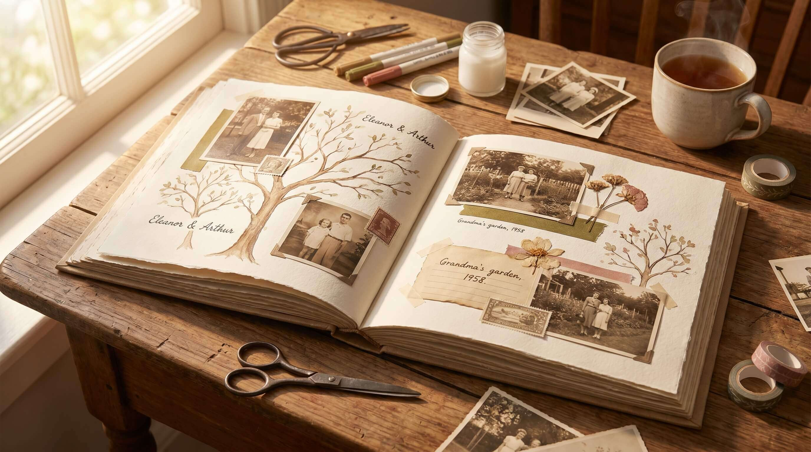

How to Make a Beautiful Family Tree Album (Step-by-Step Guide)
A beautiful family tree album preserves your family history in a meaningful way. Learn how to plan, organize, and style your album to create a lasting emotional heirloom.

How to Make a Beautiful Family Tree Album (Step-by-Step Guide)
Understanding the Purpose of a Family Tree Album
A family tree album is more than just a collection of names and photos—it is a visual story of where you come from and the people who shaped your life in different ways.
Its main purpose is to preserve family history in a meaningful and organized way. It helps you see how generations are connected, how your family has grown, and how each person plays a unique role in the bigger picture.
Emotionally, a family tree album creates a sense of belonging. It reminds you that you are part of something larger than yourself—a history filled with experiences, struggles, love, and memories passed down over time.
It also helps keep memories alive. Old photographs, names, and stories that might otherwise be forgotten are preserved and given importance again. This can feel especially meaningful for younger generations who may not have met all their relatives.
A family tree album can also strengthen emotional bonds. As you create it, you often reconnect with family members, hear untold stories, and understand your family in a deeper, more personal way.
Planning Your Family Tree Structure
Before you start creating a family tree album, planning the structure is one of the most important steps. It helps you organize information clearly and makes the final album more meaningful and visually easy to understand.
The first decision is how many generations you want to include. Some people go back two or three generations, while others try to trace their roots as far back as possible. This depends on how much information you can collect and how detailed you want your album to be.
Next is choosing the layout style. You can create a traditional tree structure that branches upward or outward, or you can design it in a more creative format like circles, timelines, or scrapbook-style pages. The layout should make relationships easy to follow at a glance.
It is also important to decide how you want to group family members—by generation, by family branches, or by both sides of the family. This helps avoid confusion and keeps the structure organized.
Planning also includes thinking about space for photos, names, and short stories. A clutter-free design makes the album more readable and emotionally impactful.
Collecting Family Information and Photos
Collecting family information is the heart of creating a meaningful family tree album. This step is all about gathering the details that bring your family history to life, beyond just names on paper.
Start by collecting basic information like full names, birth dates, relationships, and important life events. Talking to parents, grandparents, and older relatives can help you fill in missing details that are not written anywhere.
Next, focus on old photographs. These pictures add emotional depth to your family tree. Even faded or damaged photos carry memories that make the album feel more personal and real.
It’s also valuable to collect small family stories—memories of childhood, achievements, struggles, or funny moments. These short stories make each family member feel more alive in the album instead of just being a name.
You may also need to verify relationships carefully, especially when going back multiple generations, to make sure the information is accurate and clearly connected.
Because every photo, name, and story adds emotional meaning…
and this step transforms your family tree album from simple information into a living memory of your family’s journey across generations.
Choosing the Right Album Style and Format
Choosing the right style for your family tree album is an important step because it decides how your memories will be presented and how people will experience them in the future.
A scrapbook style album is very creative and personal. It allows you to mix photos, handwritten notes, decorations, and small memories on each page. This style feels emotional and artistic, but it takes more time and effort to design.
A digital album is modern and flexible. You can create it using tools like Canva or other design platforms. It is easy to edit, share with family members online, and store safely without worrying about physical damage.
A handmade chart is more traditional and visual. It usually shows the family tree in a structured layout on paper or board. This format is simple, clear, and great for displaying relationships at a glance.
A printed book format is more formal and long-lasting. It looks professional and can be preserved for generations. It is ideal if you want your family history to feel like a documented legacy.
Each format has its own emotional value and purpose. The best choice depends on your time, creativity, and how you want your family story to be remembered.
Designing the Family Tree Layout
Designing the layout is where your family tree starts to visually come alive. It is the step that turns collected information into a clear and meaningful structure that people can easily understand and emotionally connect with.
The first important idea is organizing by generations. Typically, the oldest generation is placed at the top or center, and the tree expands downward or outward as newer generations are added. This helps show the natural flow of time and family growth.
Next, you need to decide how the branches will spread. Each main family line (like grandparents’ children and their families) becomes a separate branch. These branches should be spaced clearly so relationships don’t feel confusing or crowded.
Another key part is showing connections clearly. Lines, arrows, or curves are used to connect parents to children, making it easy to understand relationships at a glance. Keeping these lines neat and consistent helps the design look clean and organized.
It is also important to balance space and clarity. Leaving enough space between names, photos, and branches prevents the chart from feeling messy and makes each family member easier to recognize.
You can also add visual hierarchy, such as using different font sizes or colors to highlight generations or important family members, while still keeping the design simple and readable.
Adding Personal Stories and Memories
A family tree album becomes truly special when it goes beyond names and relationships and starts including personal stories and memories. This is the part that transforms it from a simple chart into a living emotional record of your family.
Adding small emotional notes for each family member helps capture their personality and presence. It can be something simple like how kind they were, what people loved about them, or a small habit that made them unique.
Including achievements and life moments is also important. These could be education milestones, career achievements, marriage stories, or meaningful life events that shaped who they became. It helps future generations understand not just who they were, but what they contributed.
You can also add personal memories shared by family members. These might be funny incidents, emotional experiences, or heartfelt moments that everyone still remembers. Even small stories can carry deep emotional value when written down.
This step also allows you to add a human touch to the family tree. Instead of just seeing a structured list, people start feeling the warmth, struggles, and journey of each individual.
Making It Creative and Visually Attractive
A family tree album becomes much more engaging when it is designed creatively. Visual appeal is not just about beauty—it helps people emotionally connect with the story and enjoy exploring each page.
One simple way to enhance the design is by using colors to represent generations or family branches. For example, you can use soft green for grandparents’ generation, blue for parents, and warm tones like yellow or peach for children. This makes the structure easier to understand and visually pleasing.
Choosing a theme also adds personality to the album. You might go for a vintage theme with old paper textures for a nostalgic feeling, or a modern clean theme with minimal colors for a more organized look. Some people even choose cultural or heritage-based themes that reflect their family background.
Decorations and design elements can make each page more meaningful. You can add small borders, floral patterns, icons like hearts or trees, or even handmade doodles to highlight relationships and memories.
For example:
- A grandmother’s page could have soft floral decorations to represent warmth and care
- A childhood photo section could include playful icons like stars or sketches
- A wedding memory page could use elegant golden or pastel accents
Even spacing, fonts, and alignment play a big role in making the album look clean and readable. A consistent style across all pages keeps the design balanced.
Tools and Materials You Will Need
Creating a family tree album becomes much easier when you have the right tools and materials ready before you start. The tools you choose also depend on whether you want a handmade, digital, or printed version.
- Plain chart paper / scrapbook sheets
- Pencil and eraser (for rough layout)
- Black pen / gel pen (for final writing)
- Color markers or sketch pens
- Ruler (for neat structure and alignment)
- Printed family photos
- Glue stick or double-sided tape
- Scissors
- Stickers, washi tape, or decorative items
- Canva / PowerPoint (for digital version)
- Printer (for printing photos or final pages)
How to Do the Job Step by Step
Once you have all your materials ready, start by lightly sketching your family tree structure on paper using a pencil and ruler. Decide where each generation will go so the layout stays balanced and clean.
Next, begin adding names and relationships using a black pen so everything looks clear and readable. Always start from the oldest generation and move downward or outward.
After that, carefully attach photos next to each family member using glue or tape. Make sure each picture matches the correct person to avoid confusion later.
Then move on to decoration and design work. Use colors, borders, and stickers to make each section visually attractive. Keep the design consistent so it doesn’t look messy.
If you are working digitally, open Canva or PowerPoint and use shapes, lines, and frames to build the tree structure. Then upload photos and add text neatly.
Finally, review everything once—check spelling, connections, and spacing—so your family tree looks clean, complete, and meaningful.
Common Mistakes to Avoid While Making a Family Tree Album
While creating a family tree album is a meaningful and creative process, a few common mistakes can make it confusing or less impactful if you are not careful.
One major mistake is a cluttered design. When too many names, photos, decorations, and colors are packed into one space, the album becomes hard to read. Instead of feeling emotional and clear, it starts looking messy and overwhelming. Keeping enough spacing between elements is very important.
Another common issue is missing information. Sometimes, important details like full names, relationships, or correct generations are left out. This can break the connection in the family tree and make it incomplete or confusing for future viewers.
Poor organization is also a big mistake. If generations are not arranged properly or branches are mixed up, it becomes difficult to understand the family structure. A clear flow—from older generations to younger ones—helps maintain order.
Many people also forget to label photos properly, which can lead to confusion later, especially in larger families.
Because a family tree album is meant to preserve clarity and memory…
avoiding these mistakes ensures your work stays clean, meaningful, and easy to understand for generations to come.
Digital vs Handmade Family Tree Albums
Pros and cons of both styles
Choosing between a digital and handmade family tree album depends on your style, time, and how you want your family history to feel and look.
🖥️ Digital Family Tree Album
Pros:
- Easy to design using tools like Canva or PowerPoint
- Can be edited anytime without starting over
- Easy to share with family members online
- Clean, professional, and organized look
- Safe from physical damage like tearing or fading
Cons:
- Less personal or “handmade” emotional feel
- Requires basic digital skills or tools
- Depends on devices for viewing
✋ Handmade Family Tree Album
Pros:
- Very personal and emotionally meaningful
- Creative freedom with drawings, stickers, and designs
- Feels more sentimental and unique
- No technical skills required
Cons:
- Time-consuming to create and fix mistakes
- Can get damaged over time (water, tearing, fading)
- Harder to share with distant family members
- Limited space for large or complex family trees
Keeping the Album Updated Over Time
A family tree album is not a one-time project—it is a living record that grows as your family grows. Keeping it updated ensures that it stays meaningful, accurate, and valuable for future generations.
One important step is to add new family members as soon as changes happen. This includes births, marriages, and new relationships. Updating early helps avoid forgetting important details later.
It is also helpful to regularly revise and organize existing information. Over time, you may discover new details or corrections about names, relationships, or dates. Keeping everything accurate makes the family tree more reliable.
When adding new members, try to maintain the same design style and structure. This keeps the album visually consistent, even as it expands across generations.
You can also make it more meaningful by adding new photos and short stories for new family members. This keeps the emotional connection alive instead of just updating names.
Another good habit is to review the album during family gatherings or special occasions. This not only helps in updating information but also strengthens emotional bonds as everyone contributes memories.
Final Thought: A Family Tree Album Is a Legacy of Love
A family tree album is much more than a creative project—it is a heartfelt way of preserving the story of where you come from and the people who shaped your life.
Every name, photo, and story inside it carries emotion, memory, and connection. It is not just about organizing relationships, but about honoring the journey of generations who lived, loved, struggled, and built the foundation of your present life.
Over time, this album becomes something truly special. It turns into a reminder that your identity is not isolated—it is part of a larger family history filled with experiences and emotions passed down through time.
Even simple pages can hold deep meaning when they are filled with love, effort, and remembrance. Future generations will not just see names—they will feel the presence of their roots.
Because in the end, a family tree album is not about paper, photos, or design…
it is about preserving love, connection, and memory in a way that keeps your family story alive long after moments have passed.